PLM Qt 前端界面截图
2026-10-15 · 33 张截图 · 主窗口 1280 × 800 · 点击图片查看原图
使用临时演示项目和独立设置，生成真实 RTL / testbench 后截图。文档已等待加载完成；确认弹窗仅展示。
查看浅色主题概览
浅色主题 / 主界面与弹窗
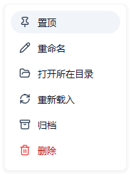
项目菜单
00-project-context-menu.png · 184 × 246
 项目菜单按钮
项目菜单按钮
00-project-more-active.png · 236 × 34
侧边栏收起
00-sidebar-collapsed.png · 56 × 708
表格行菜单
01-controller-context-menu.png · 184 × 138
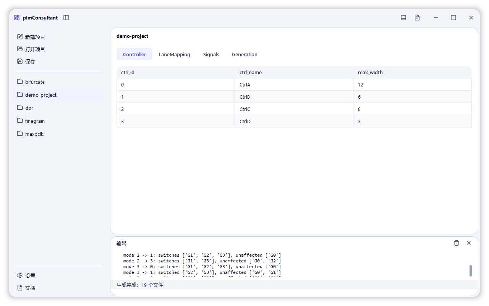
Controller 控制器
01-controller.png · 1280 × 800
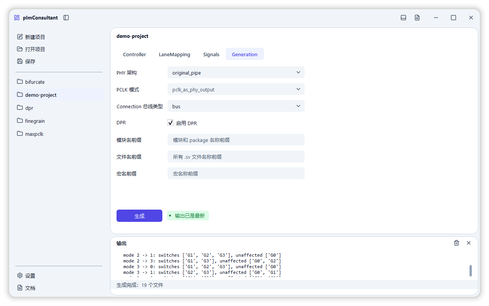
Generation 生成配置
01-generation.png · 1280 × 800
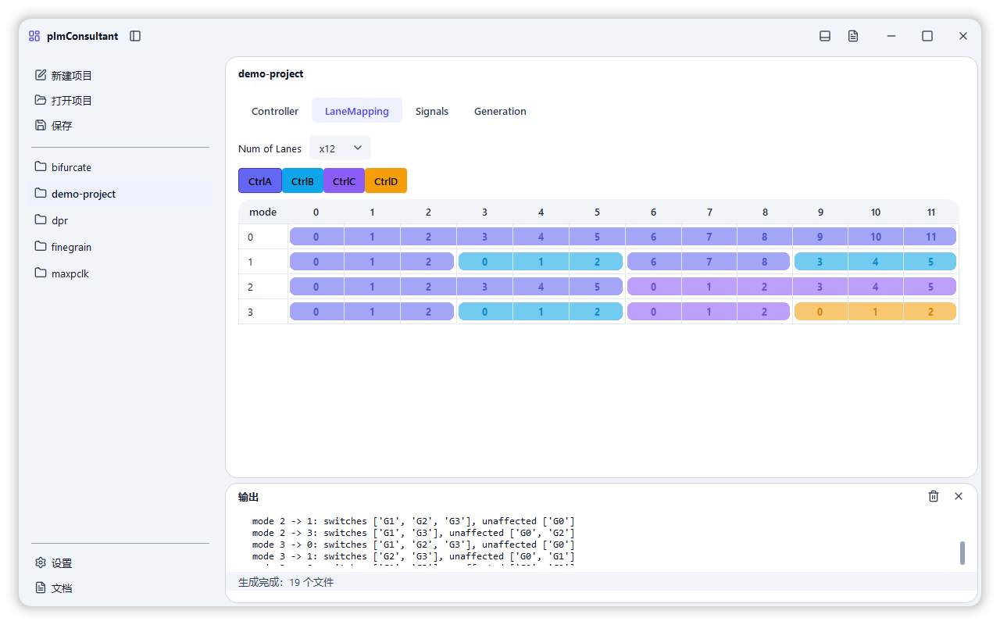
LaneMapping 通道映射
01-lane-mapping.png · 1280 × 800
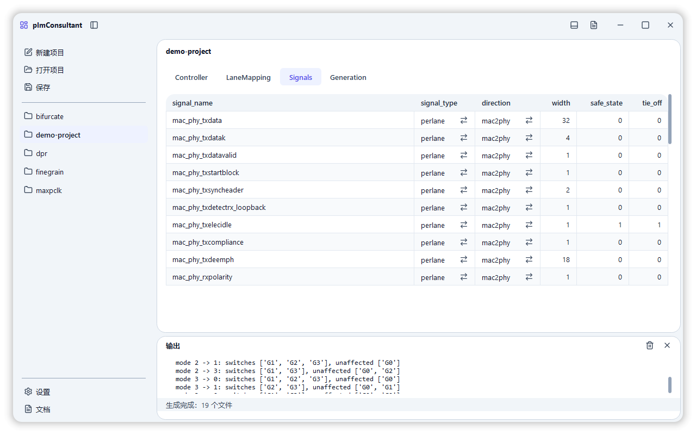
Signals 信号配置
01-signals.png · 1280 × 800
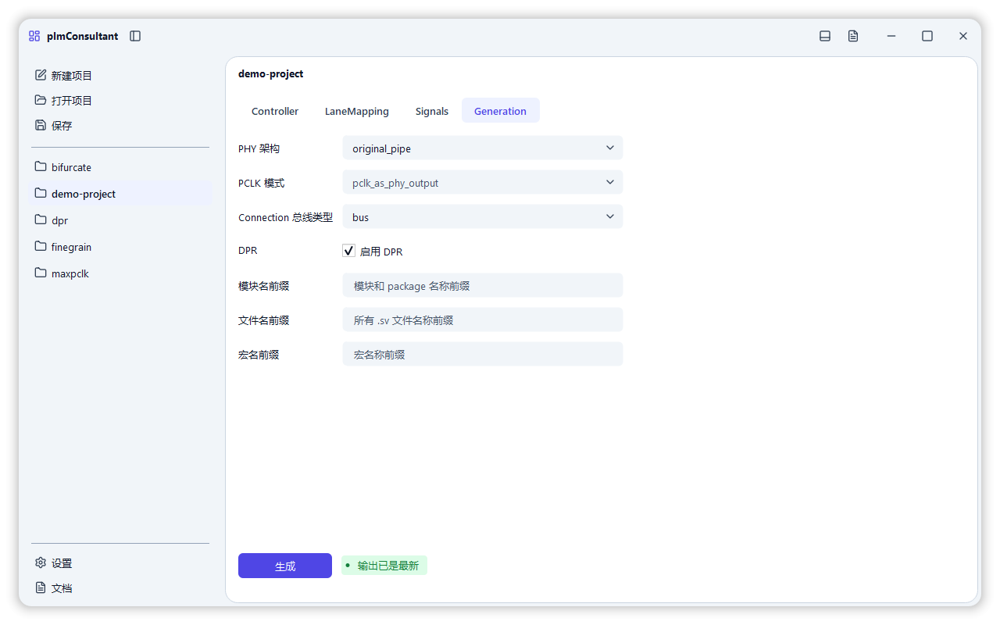
主界面 / 输出面板收起
02-main-with-log.png · 1280 × 800
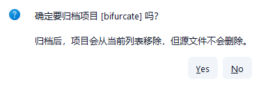
归档确认
03-confirm-archive.png · 375 × 127
 删除确认
删除确认
03-confirm-delete.png · 297 × 127
 新建项目
新建项目
03-new-project.png · 540 × 238
默认编辑器设置
04-settings-editor-row.png · 924 × 32
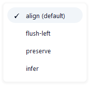
格式化选项菜单
04-settings-formatter-defaults.png · 184 × 174
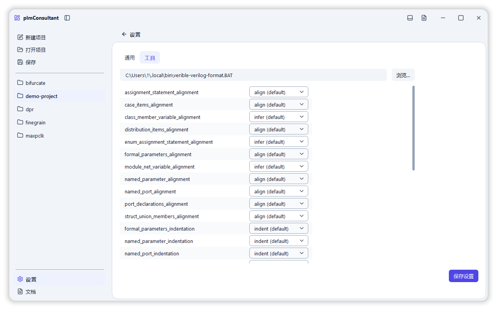
设置 / 工具
04-settings-formatter.png · 1280 × 800
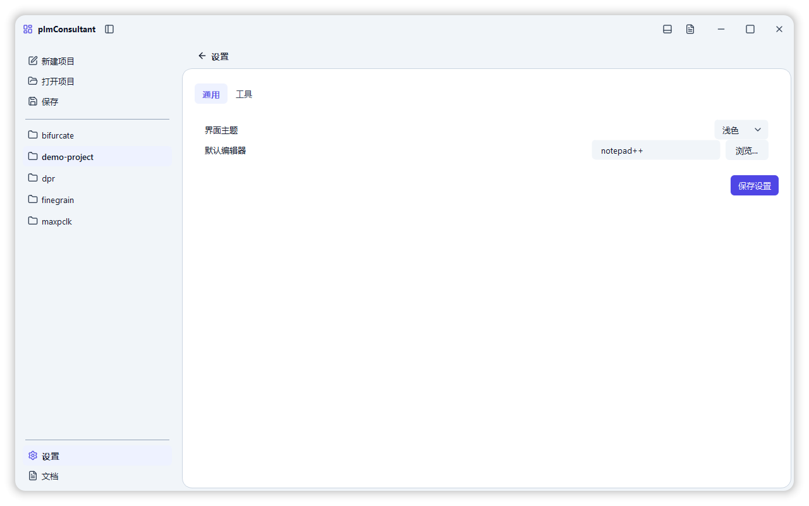
设置 / 通用
04-settings-general.png · 1280 × 800
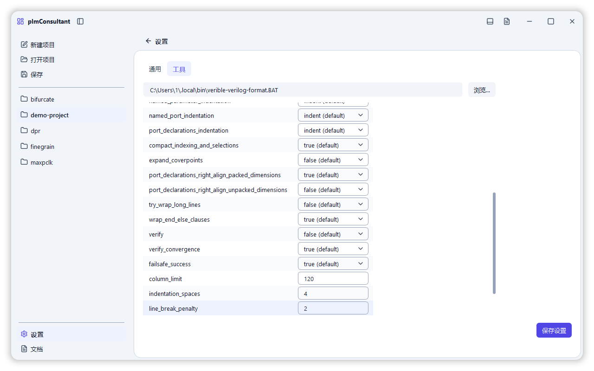
格式化数值参数
04-tools-numeric.png · 1280 × 800
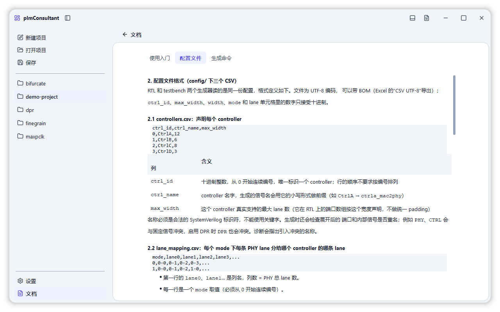
文档 / 配置文件
05-docs-configuration.png · 1280 × 800
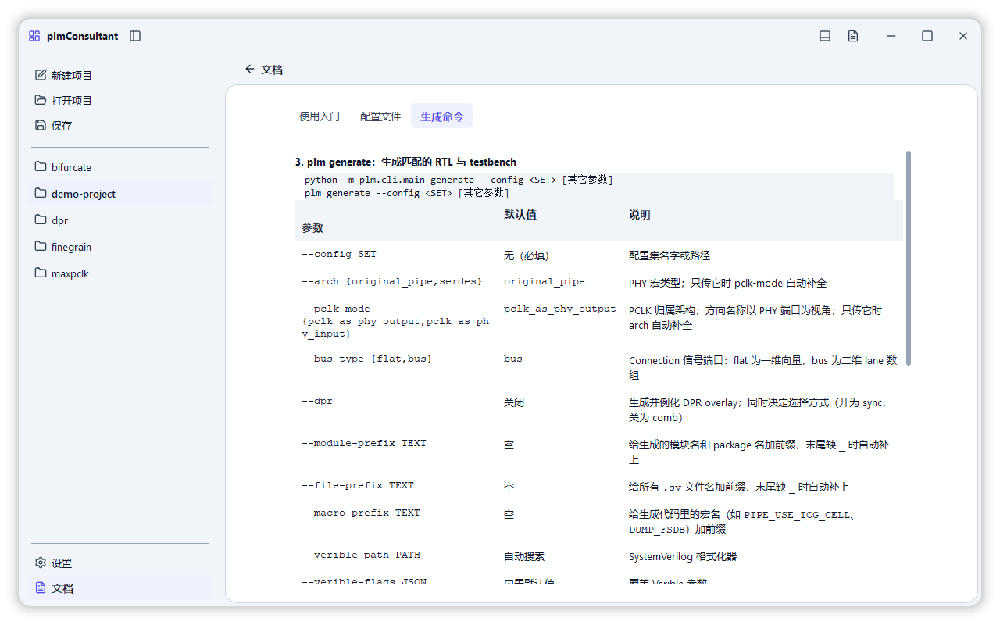
文档 / 生成命令
05-docs-generation.png · 1280 × 800
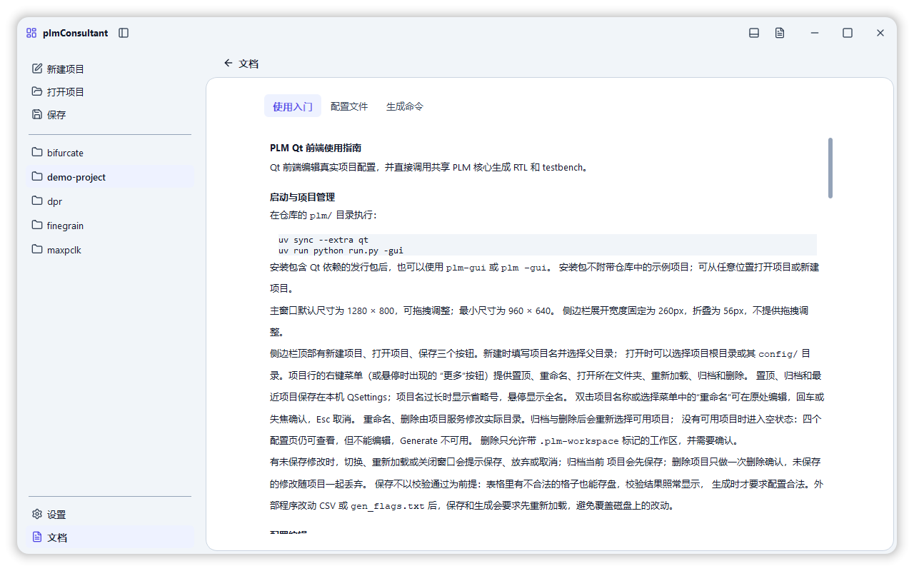
文档 / 使用入门
05-docs-getting-started.png · 1280 × 800
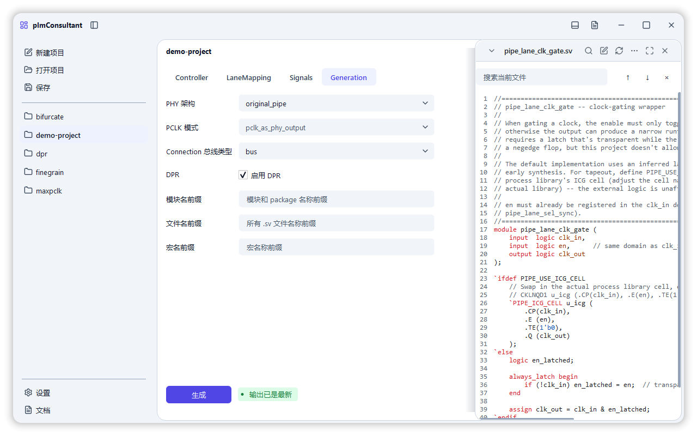
生成结果 / 搜索
06-artifacts-search.png · 1280 × 800
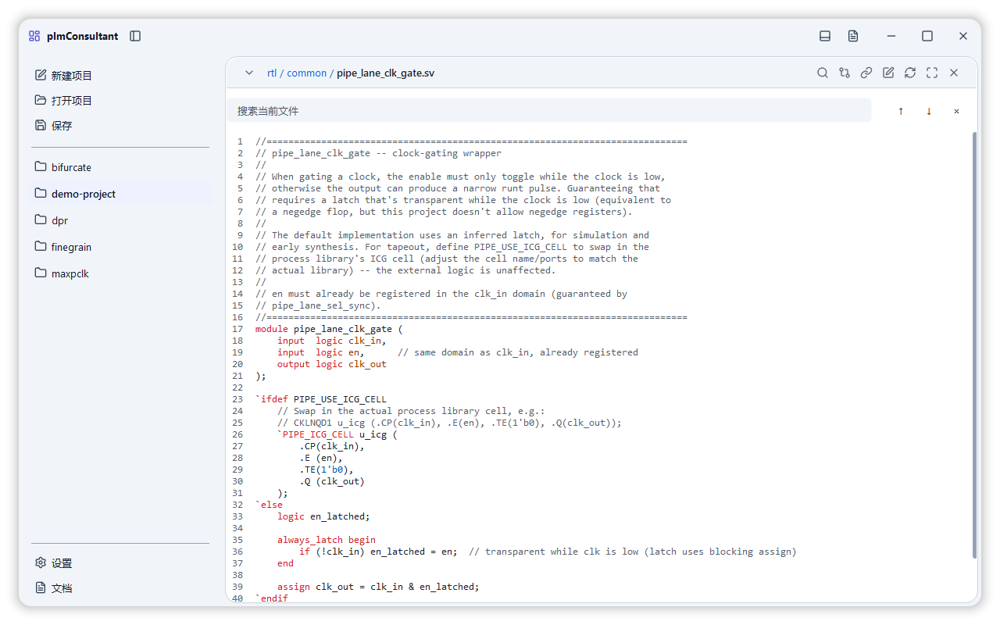
生成结果 / 最大化
07-artifacts-maximized.png · 1280 × 800
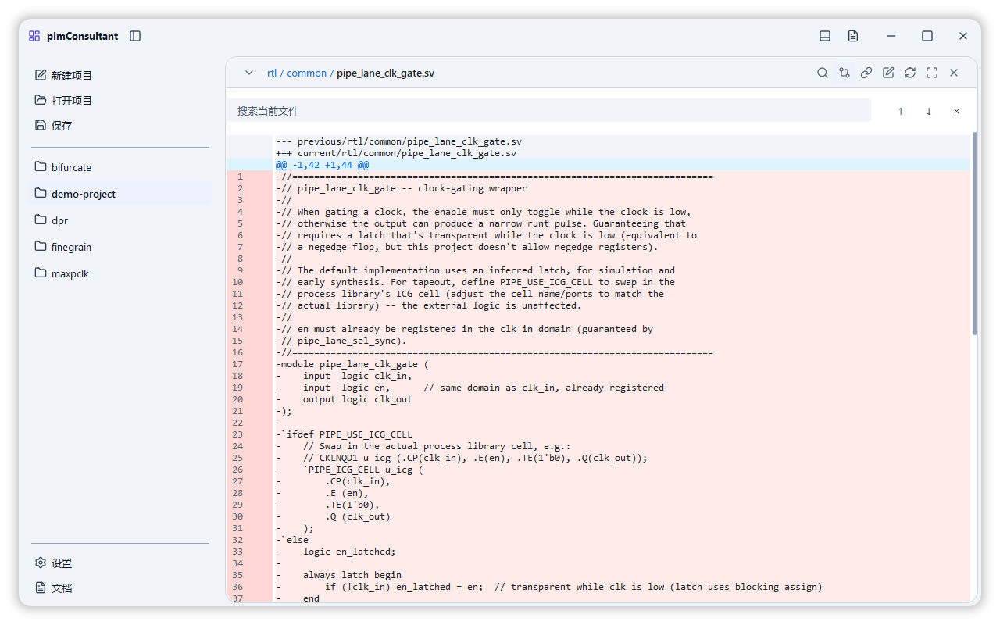
生成结果 / 差异
08-artifacts-diff.png · 1280 × 800
深色主题 / 各主要页面